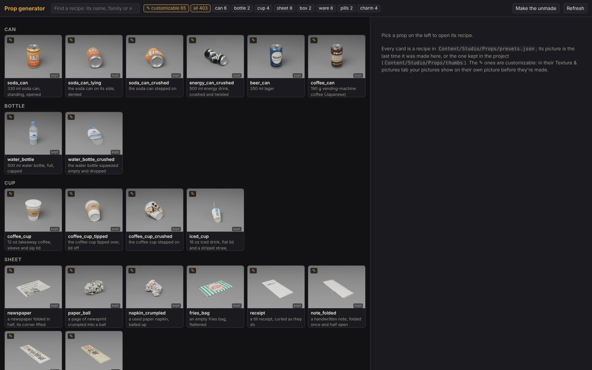
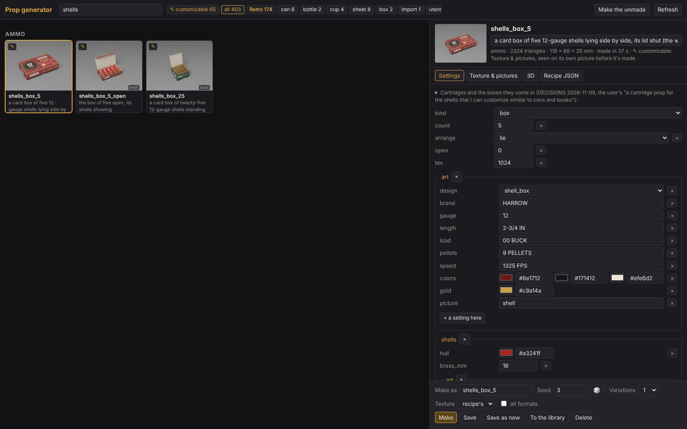
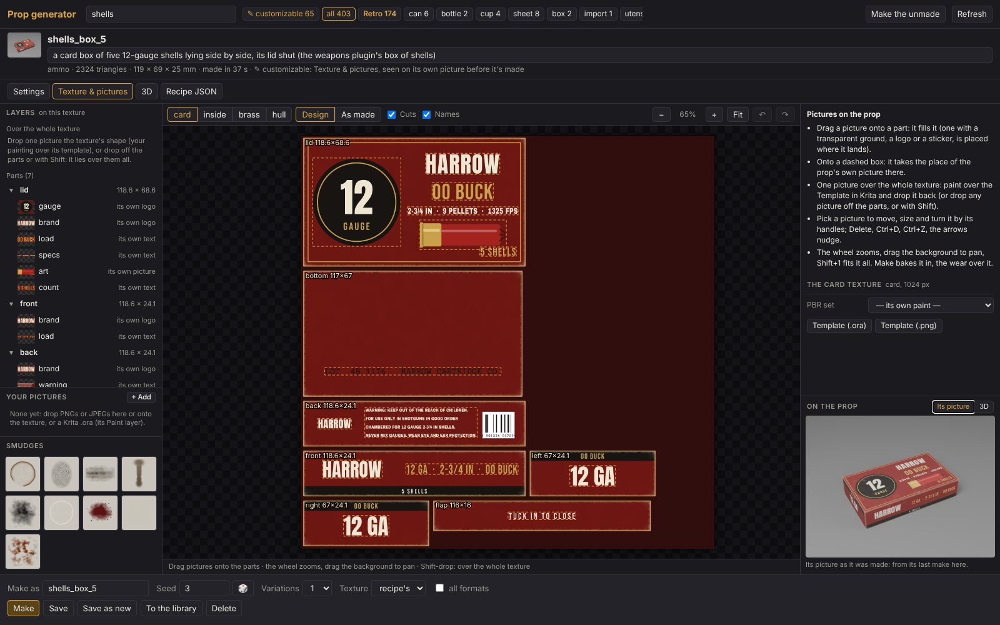
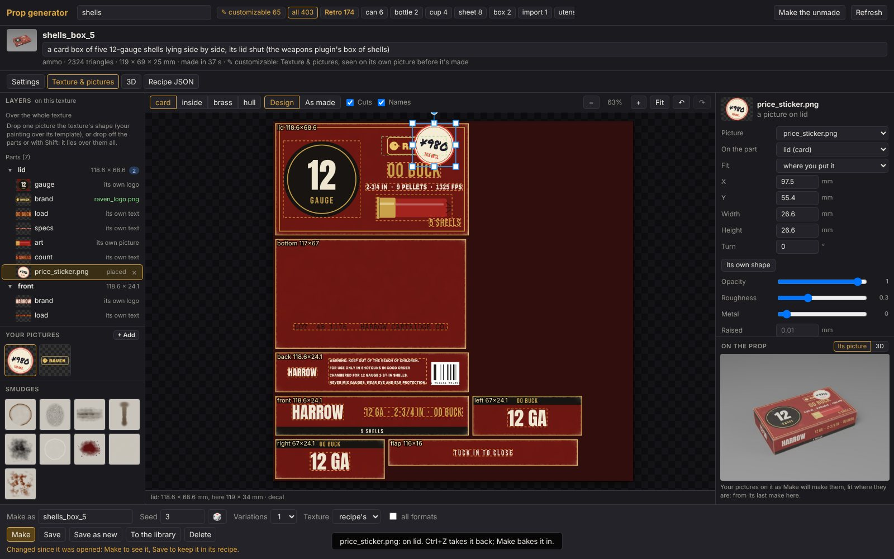
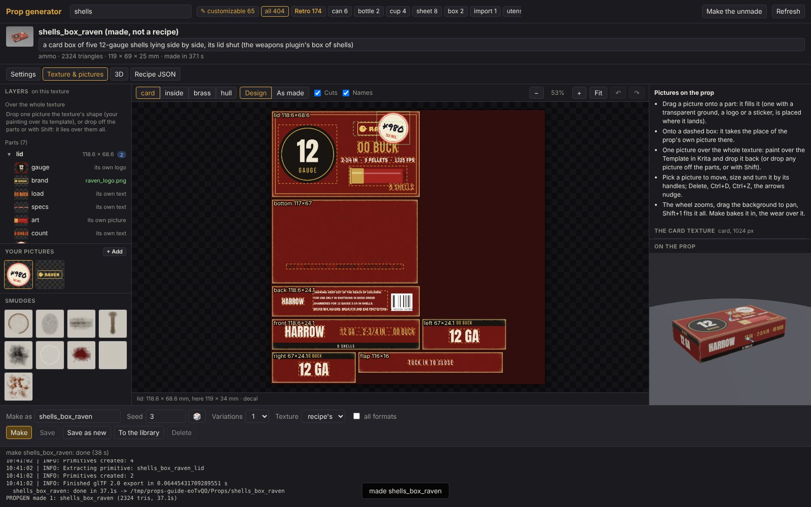
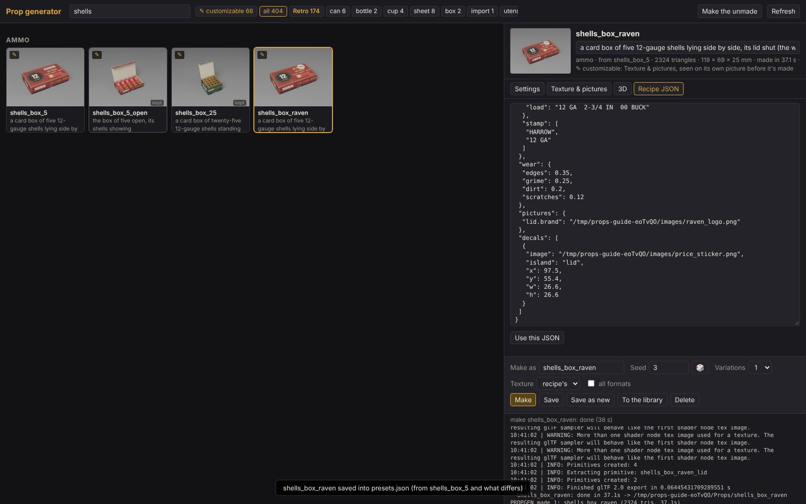
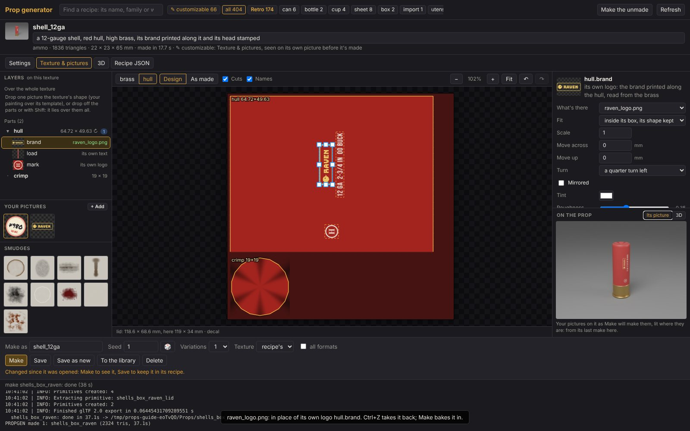
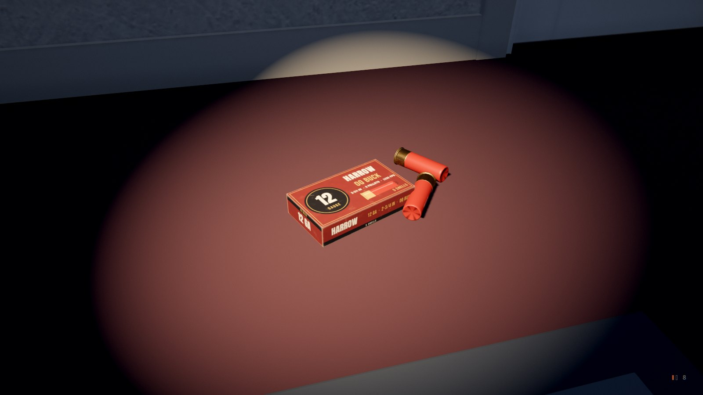
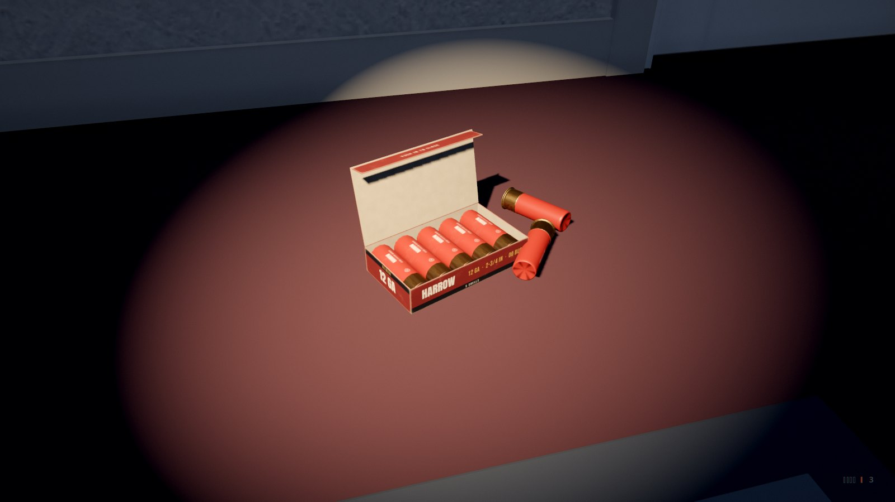

The prop customizer
Your own pictures on the studio's props: a brand on a can, a cover on a book, a logo on a box of shells, a price sticker slapped on its lid. Dragged onto the prop's texture in the prop generator's page, seen on the prop's own picture before anything is made, then made into a model for Godot with the wear and the shading over them.
1What it is
Every prop the studio makes is a recipe (in Content/Studio/Props/presets.json) that the prop
generator turns into a model in Blender. Some props are customizable (marked ✎): what's printed on them
is made of their own pictures, each in a box you can swap for yours. They are the cans, bottles, cups, boxes,
paper (receipts, notes, newspapers, talismans), books, pill bottles, appliances' fake brands, charms (ema, omamori),
mugs and jars, and now the shotgun shells and their box.
Any prop takes your pictures as stickers, stamps and stains (decals and smudges). A customizable one also shows them on its own picture before it's made: the page lays your pictures on the prop's rendered picture, lit as Blender will light them, in the browser, as you drag.
pictures,
decals, sheets, smudges), and the pictures you drop in are kept in
Content/Studio/Props/images/. Make bakes it all into the prop's textures, under its wear.2Opening the page
From the project's folder:
python tools/propgen/serve.py # then open http://127.0.0.1:8799
Or start it from the dashboard (python dashboard.py, the Prop generator tile) or the launcher
(./studio). The page needs no Blender to look at props and preview your pictures; Make runs Blender
(the project's own, set up by tools/retarget.py setup, or one on your PATH).
3Finding a prop to customize
Every card is a recipe, its picture the last time it was made here, or the one kept in the project (marked
kept). Click ✎ customizable in the bar at the top to see only the customizable ones;
type in the search box to find one by its name, its family or its words (shells, can,
book).

A badge on a card says more: not made yet (only its recipe), made with changes (made with settings its recipe doesn't have), older picture (its recipe changed since its picture was kept). Click a card to open it on the right.
4Its words and colours first
Much of what's printed is words and colours you can change without any picture: the Settings tab is the recipe as a form. On the box of shells that's its brand, gauge, length, load, pellets, speed, the box's colors (its ground, its dark band, its ink), the gold, the picture on its lid (a shell, a target or none), how many shells and whether they lie or stand, and how far its lid is open. Change one and Make: the generator draws it again in its own fonts.

5The picture editor
Open the Texture & pictures tab. It takes the whole page, in three columns:
Left: layers and pictures
The texture's parts (each face or piece of the prop), each with its own pictures under it; Your pictures (+ Add); the Smudges. A click picks one, a double-click zooms to it.
Middle: the texture
The prop's texture, flat: the parts at their real sizes, the cuts (where the model is cut apart, in yellow), each part's name and size, and its own pictures as dashed boxes (green once they're yours, red turned off). Drag pictures onto it.
Right: settings and the prop
The picked thing's settings (with nothing picked: how to use it, a PBR set for the texture, its templates), and under them On the prop: Its picture and 3D.

- The bar over the canvas: a button for each texture the prop has (the box has card, inside, brass and hull: the printed card, its plain inside, and the shells' brass and plastic); Design (the generator's paint with your pictures over it, live) or As made (the made texture, wear and shading in); Cuts and Names; the zoom, Fit, undo and redo.
- Moving round: the wheel zooms where the pointer is; drag the empty background (or hold Space, or drag with the middle or right button) to pan; Shift+1 fits it all; a double-click zooms to what's under it. The line under the canvas says which part the pointer is over and where, in millimetres.
6Your pictures
Bring pictures in with + Add under Your pictures, or drag files straight from your
desktop onto the canvas (they're added on the way). PNG, JPEG, or a Krita .ora. They're kept in
Content/Studio/Props/images/, so every recipe can use them.
- A logo, a sticker, a stamp: a PNG with a transparent ground. Dropped on a part it's placed where it lands; its transparency cuts it out.
- A label, a cover, a picture to fill a part: an opaque picture. Dropped on a part it fills it (stretched to it when it's the part's shape within a tenth, else covering it, the rest cut off).
- The size it wants: every part and picture says it (wants 384 × 112 px): twice the texture's pixels there, so it's sharp close up and on a texture twice the size. Bigger is fine; smaller goes soft.
guides/prop_customizer/examples/:
raven_logo.png (a brand, transparent round it) and price_sticker.png (a shop's price sticker).7Swapping one of its own pictures
Drag your picture onto one of the dashed boxes: it takes that picture's place. While you drag, the box you're
over lights up and a label says what the drop will do. On the box of shells, the lid's brand is lid.brand;
dropped there, your logo replaces HARROW, kept to its own shape inside the box.

Its settings, on the right:
- What's there: your picture, the generator's own drawing, or nothing (turned off).
- Every brand at once: the same picture in every own picture of that name (the lid's, the front's, the back's brand; or every shell's in a box).
- Fit: inside its box with its shape kept (the default), covering its box, stretched to it, or repeated over it (a pattern). Scale, Move across and up (mm), Turn (quarter turns), Mirrored, Tint (a one-colour logo recoloured), Roughness.
- Its template: the generator's own drawing there, at the size it wants, to paint over.
Delete on a swapped one gives it back its own drawing. Holding Alt as you drop puts the picture on the part instead of in the box.
8Putting a picture anywhere
Drop a picture with a transparent ground on a part, away from its boxes: it's placed where it lands, half the part's size, and picked. Its handles work as in Figma:
- drag it to move it (it snaps to the part's middle lines: a magenta guide); onto another part of the same texture, it goes there;
- a corner sizes it with its shape kept (Shift: freely; Alt: about its middle), a side stretches it;
- the round handle above it turns it (Shift: 15° steps);
- the arrows nudge it 1 mm (Shift: 10).

Its settings say which part it's on, its Fit (where you put it; filling the part, stretched or its shape kept; inside the part; across its width; up its height), its place and size in mm, its turn, opacity, roughness, metal and how raised it stands. Under more, it can be a flourish: repeated along the part, or one in each corner, mirrored to face it.
9A whole part, or the whole texture
- A whole part: drop an opaque picture on it, or pick the part (on the left) and use Fill it with. The part's settings say its size, its shape and the picture it wants; Its template is the part as it's painted now with its cuts, to paint over. A part that goes round the prop (a can's label, a shell's hull) wants a picture whose left and right edges meet.
- The whole texture at once (a sheet): with nothing picked, Template (.ora)
downloads the whole layout for Krita: the paint on Base, the cuts, boxes and names on Guide (locked),
and an empty Paint layer for you. Paint on it, save, and drop the
.oraback onto the canvas: your Paint layer lies over the whole texture, each part getting its own piece. Template (.png) is the same flattened, for any other painter. A picture the texture's shape, or one dropped off the parts, or with Shift, goes over the whole texture too.
10Smudges and repeats
Under Smudges on the left are nine stains drawn by code: a coffee ring, a fingerprint, grease, a drip, soot, a water mark, blood, dust and rust. Drag one onto a part: it lands there. Its settings: multiply (darkens, as coffee, soot, grease or blood do) or mix (lays its colour, as dust or water marks), its strength, tint, roughness (grease shiny, dust matt), how raised, and a count to scatter that many at random. Your own pictures work as smudges too (a PNG transparent round it, or a picture dark on white).
11Seeing it before it's made
Under the settings, On the prop has two views:
- Its picture (a customizable prop opens on it): the prop's own rendered picture with what you've laid since it was made, lit and toned as Make will light it. Where an own picture was swapped, its ground shows under yours, so a new logo hides the old one. It costs a few milliseconds a change: no Blender.
- 3D: the made model wearing the canvas as you edit; drag to turn it, the wheel to come closer; a click on it picks the part there.
A picture moved or taken out since the last make still shows where it was in Its picture, and an own picture given back its drawing shows empty, until it's made again: the note under the picture says so. A prop that isn't made on your machine opens from what the project keeps of it (kept · not made here): its picture and its parts work, but there are no cuts and no 3D until it's made.
12Making it and keeping it
The bar under the editor:
- Make as: the name it's made under. Leave its own name to make it again, or type a new one to make a variant (the recipe isn't changed by a make).
- Texture: the texture's size (the recipe's, or 512, 1024, 2048). Variations: several made at once,
each another roll of the dice (
_v1,_v2…). Seed and 🎲. all formats: FBX, OBJ and .blend beside the glb. - Make runs Blender in the background, its log underneath; the card's picture changes when it's done.

shells_box_raven (38 s): the log under the editor, and the made box in 3D wearing the logo and the sticker.- Save (Ctrl+S) writes the settings into the recipe you opened;
Save as new keeps them as a new recipe under Make as's name, written as
fromthe recipe it started from and only what differs. Every save keeps a copy ofpresets.jsonfirst (Saved/Props/_history/, the last 50). - To the library puts the made prop where a story places it (
asset props/<name>). Delete takes a recipe out.

pictures (the logo in lid.brand) and decals (the sticker on the lid). (Here the pictures are in a scratch folder; yours are in Content/Studio/Props/images/.)13The shells and their box
The ammo family: a 12-gauge shell and a printed card box of them, everything printed or stamped on
them its own pictures.
shell_12ga, shell_12ga_spent
A shell, live or fired. Its hull printed along its length on
the side that faces you: hull.brand, hull.load, hull.mark; its brass head stamped
round the primer: base.stamp. Settings: hull (its colour), brass_mm, art (brand, load,
ink, mark), stamp (the head's words).
shells_box_5, shells_box_5_open
A box of five lying side by side, its lid shut or open, the
shells inside (the weapons plugin's box of shells). Its own pictures: lid.brand, lid.gauge,
lid.load, lid.specs, lid.count, lid.art, front.brand,
front.load, back.brand, back.warning, left.gauge,
right.gauge, bottom.lot, flap.words, and the shells' own.
shells_box_25
Twenty-five standing heads up in a green box of birdshot, its lid open.
Any count: count and arrange (lie or stand); open the degrees its lid
is made open (in Godot the lid is a part on its hinge that opens).
A shell's print runs along its hull, so its own pictures are turned a quarter: a logo dropped on
hull.brand runs along the hull, read from the brass. In a box, the shells inside wear the same pictures
(hull and brass in the bar): one logo on hull.brand is on
every shell.

14Into the game
A make writes Saved/Props/<name>/<name>.glb (with its textures inside) and
<name>.tscn, the prop ready to drop into a Godot project. For a story, To the library.
For the Weapons plugin's box of shells and the shells it loads, make shells_box_5 and
shell_12ga (keep their names) and copy the glbs over the plugin's:
python tools/propgen.py make shells_box_5 shell_12ga shell_12ga_spent cp Saved/Props/shells_box_5/shells_box_5.glb Saved/Props/shell_12ga/shell_12ga.glb \ Saved/Props/shell_12ga_spent/shell_12ga_spent.glb GodotPlugins/HorrorStudioWeapons/addons/horrorstudio_weapons/models/ python tools/godot_byhand.py install ~/Games/MyGame # the plugins again in your project


15In the recipe, by hand
Everything above is plain words in the recipe, so you can write it yourself (or check what the page wrote):
"shells_box_raven": {"from": "shells_box_5",
"pictures": {"lid.brand": "Content/Studio/Props/images/raven_logo.png",
"*.brand": {"image": "Content/Studio/Props/images/raven_logo.png", "tint": "#e8c466"},
"lid.art": false},
"decals": [{"image": "Content/Studio/Props/images/price_sticker.png", "island": "lid",
"x": 97.5, "y": 55.4, "w": 26.6, "rot": -8}],
"smudges": [{"image": "smudge/grease", "island": "lid", "x": 30, "y": 20, "w": 18, "strength": 0.6}],
"sheets": [{"image": "Content/Studio/Props/images/my_layout.png", "mat": "card"}]}
pictures: an own picture by its id (<part>.<name>), a*for every one that matches,falsefor nothing there; a picture's settings:fit,scale,dx,dy,rot,flip,tint,rough.decals: a picture on a part (island) atx,y(mm, its middle),w/h,rot, orfit(stretch,cover,contain,width,height);repeatorcornersfor a flourish.smudges,sheets: as in sections 9 and 10.
Every prop's own pictures, with the size each wants, are listed in docs/PROPGEN_PICTURES.md
(python tools/propgen.py pictures writes it again).
16Keys
| Ctrl+Z / Ctrl+Shift+Z (or Ctrl+Y) | undo / redo |
| Delete | take the picked picture out (an own picture: back to its own drawing) |
| Ctrl+D | duplicate it |
| Ctrl+] / Ctrl+[ | draw it over / under the next one |
| arrows (Shift: ×10) | nudge it 1 mm |
| Escape | let go of it |
| wheel, + / - | zoom |
| drag the background, Space, middle or right drag | pan |
| Shift+1 / Shift+2 | fit it all / zoom to the picked one |
| Alt while dropping | on the part, not in an own picture's box |
| Shift while dropping | over the whole texture (a sheet) |
| Ctrl+S | save the recipe |
17Good to know
- The wear goes over your pictures: the folds, dents, scratches, grime and the baked shading are laid on top when it's made, so a logo on a crushed can bends and scuffs with it.
- Transparency matters: a logo on a white square is placed as a white square. Cut it out (a PNG with alpha).
- Round parts have a seam at the back: a picture over a can's label or a shell's hull wants its left and right edges to meet, or the back shows a line. A picture in the middle of the front needs nothing.
- A name taken: a picture dropped in under a name another picture has gets
_2,_3… (the same picture again is kept once). - Undo is the page's; Save is what changes the recipe. Leaving with unsaved changes asks first.
- Every brand the generator draws is made up (HARROW, KAZE…): swap in yours freely.